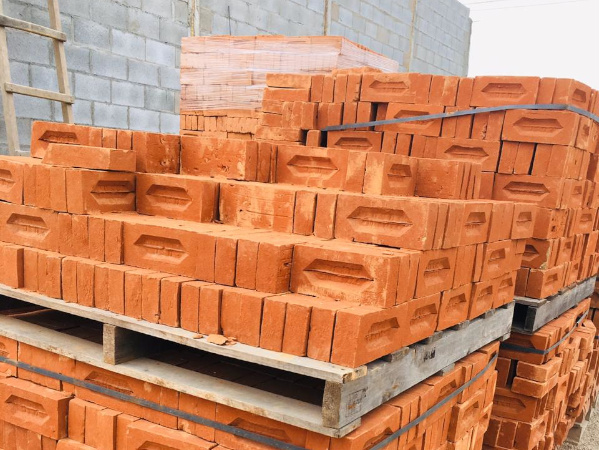

Ladrillo de arcilla

Elemento fabricado a partir de arcilla moldeada y cocida. Se utiliza en paredes, divisiones y cerramientos. El tipo de ladrillo debe seleccionarse según si el muro es estructural o no estructural.